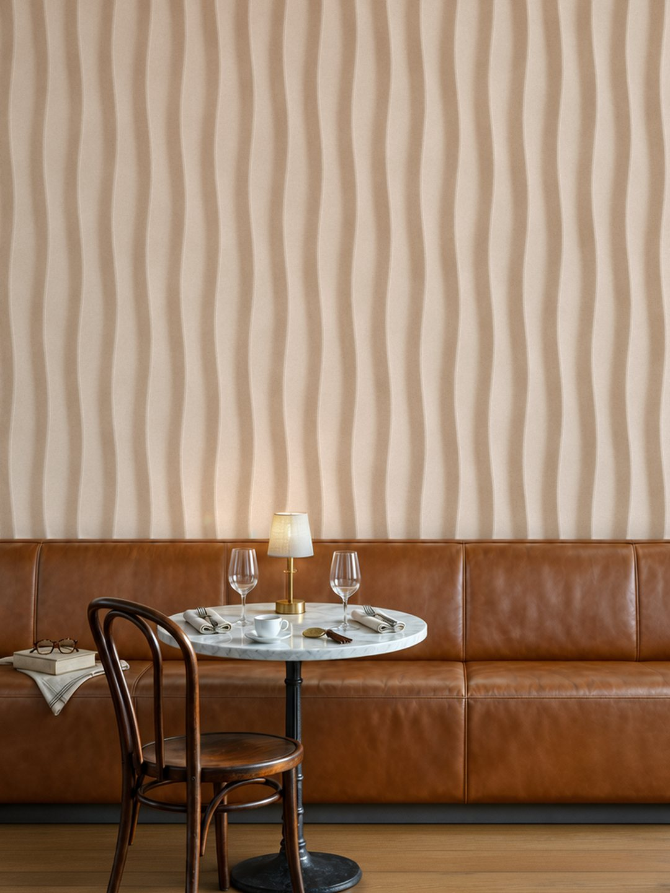

In a restaurant the menu changes and the table plan changes, but the wall behind the banquette is in the same place every evening, and the guest’s eye keeps returning to it through the meal. So a restaurant wall should not be left as the last line of the decoration schedule; it is the most lasting expression of the concept in the room.
This guide takes in turn the translation of a concept into a motif, viewing distance, light and the load of daily use. The process is the one in the hotel lobby feature wall guide; the differences come from the restaurant’s own conditions.

From Concept to Wall
The region the kitchen comes from, the chef’s favourite ingredient, the name of the place: a restaurant’s story is usually settled before the project starts, and relief carries that story onto the wall. The starting point is the project’s own language. A sketch, a photograph, a texture sample or a motif from the menu is enough to begin.
The concept is first built as a 3D model, and no material is used until the motif has settled on screen. From the approved model a mould master is made and the silicone mould is taken from it; each panel is cast in our Sapanca workshop and finished by hand.
The same master can carry onto other surfaces in the restaurant: the wall behind the banquette and the front of the bar can share the motif, all cast in Lumina PMAG™.
How It Differs From the Lobby: Viewing Distance
In a lobby the feature wall is seen from a few metres away, standing, for a short time. In a restaurant the guest is seated, often an arm’s length from the wall, and stays for an hour or two. That difference changes the scale of the pattern directly: a large motif that reads comfortably in a lobby can fall apart in a restaurant, while a fine texture only comes into its own at this closeness.
Close range also tests the material. The guest does not only see the surface but touches it, so joint lines, surface grain and finish quality cannot be hidden. In cast relief the pattern is not applied afterwards; it is cast together with the body of the panel, so what shows up close is the material itself.
Relief in Dim Light
Restaurant lighting is lower and warmer than a lobby’s, and that helps relief. As general light falls, a single source grazing the wall makes the surface stand out, and a linear fitting throwing light at 15 to 30 degrees brings out the shadow of the relief; the same surface lit flat from above reads as a plain wall.
So the lighting plan and the relief belong on the same table. Fixing the depth of the pattern before the fitting’s offset and angle are settled leaves the result to chance. A lighting-angle specification goes with every delivery, and the lighting designer can work directly from that document.
Hard Use and Material
People lean back on the banquette wall, glasses knock at the bar front, and walls near the kitchen take steam. In a restaurant the material is chosen for that use before it is chosen for how it looks.
Lumina PMAG™ is a mineral panel with a smooth surface, used behind banquettes, on seating-area walls, at bar fronts, on column cladding and on feature surfaces. Panel size and joint layout are worked out for each project, from the size of the wall and the seating plan.
To be plain about acoustics: we do not publish acoustic performance data for relief panels. Sound control in the restaurant should be planned separately.
How to Prepare a Brief
What a brief needs:
1. Wall size and position. Behind the banquette, behind the bar, or at the entrance? Note the seated guest’s distance from the wall too.
2. Concept reference. A sketch, a photograph, a texture sample or a short text telling the story of the place.
3. Lighting plan. Fitting type and its distance from the wall. If it is not settled yet, we decide it together.
4. Conditions of use. How often the surface is touched and how it is cleaned will decide the choice of artisan finish.
With these the digital work begins; once the design is approved, the technical data sheet and the installation drawing are prepared. For timing see the lead times page. Where installation is needed it is quoted separately per project; the default basis is EXW Sapanca, Türkiye.
Tell Us About Your Restaurant
Send the room, the wall dimensions and the timeline; we’ll read them and write back.
Send your drawing